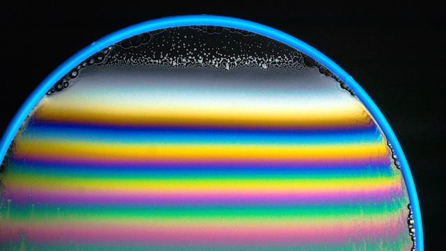

Calcola lo spessore ottico di un film tenendo conto dell'indice di rifrazione del substrato e del film, dell'assorbimento e del tipo di misurazione sperimentale.

Il fenomeno dell'interferenza nei film sottili è governato dalla differenza di cammino ottico tra il raggio riflesso dalla superficie superiore (Aria/Film) e quello riflesso dalla superficie inferiore (Film/Substrato). Se ignoriamo l'assorbimento (\(k=0\)) e i salti di fase anomali, la differenza di cammino in incidenza normale è semplicemente il doppio del tragitto nel film: \(\Delta = 2 \cdot n_{film} \cdot d\).
Le equazioni di Fresnel impongono che un'onda elettromagnetica subisca uno sfasamento di \(180^\circ\) (\(\pi\)) se viene riflessa da un mezzo con indice di rifrazione maggiore di quello di provenienza. Analizziamo i due regimi tipici assumendo materiali trasparenti (\(k=0\)):
Quando il materiale assorbe luce, il coefficiente di estinzione è \(k>0\). L'indice di rifrazione diventa un numero complesso \(\tilde{N} = n - ik\). Di conseguenza, il coefficiente di riflessione in ampiezza di Fresnel per incidenza normale, \(r = \frac{\tilde{N}_1 - \tilde{N}_2}{\tilde{N}_1 + \tilde{N}_2}\), assume la forma complessa \(r = |r|e^{i\phi}\), da cui si estrae analiticamente la fase \(\phi = \arctan\left(\frac{\text{Im}(r)}{\text{Re}(r)}\right)\).
Tracciando \(r\) sul Piano Complesso (Argan-Gauss), se \(k>0\) emerge una parte immaginaria che solleva il vettore dall'asse reale, causando una deviazione dell'angolo \(\phi\). Lo sfasamento netto totale del film è la differenza tra le due interfacce: \(\Delta\phi = \phi_1 - \phi_2\).
Assumendo incidenza normale (\(\theta = 0\)), per calcolare lo spessore reale dobbiamo esplicitare la condizione di fase totale generalizzata per l'interferenza costruttiva:
La validità del modello: Osservando la formula, se il materiale torna trasparente (\(k=0\)) nel Caso A, lo sfasamento netto \(\Delta\phi\) è esattamente \(\pi\). Sostituendo \(\frac{\pi}{\pi} = 1\), l'equazione diventa \(d = \frac{\lambda}{4n}(2m - 1)\), che si riduce a \(2nd = \left(m - \frac{1}{2}\right)\lambda\). Essendo un multiplo semi-intero del tutto equivalente a \(\left(m + \frac{1}{2}\right)\lambda\) per semplice traslazione dell'indice intero \(m\), la formula ridimostra rigorosamente la condizione dei Massimi (Interferenza Costruttiva) del Caso A.